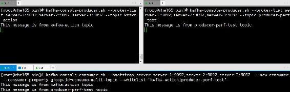
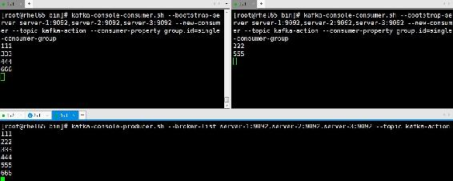
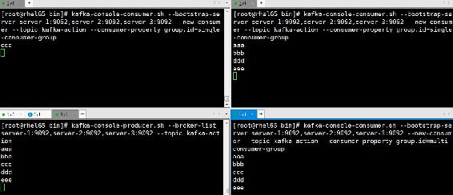

5.4 消费者基本操作
Kafka也自带了对消费者进行操作的相关脚本，本节将详细介绍每个脚本的作用及用法。
5.4.1 消费消息
Kafka的消费者以Pull的方式获取消息，同时Kafka采用了消费组的模式，每个消费者都属于某一个消费组。在创建消费者时，若不指定消费者的groupId，则该消费者属于默认消费组。消费组是一个全局的概念，因此在设置group.id时，要确保该值在Kafka集群中唯一。
同一个消费组下的各消费者在消费消息时是互斥的，也就是说，对于一条消息而言，就同一个消费组下的消费者来讲，只能被同组下的某一个消费者消费，但不同消费组的消费者能消费同一条消息，正因如此，我们很方便通过消费组来实现消息的单播与广播。这里所说的单播与广播是相对消费者消费消息而言的。
Kafka提供了一个kafka-console-consumer.sh脚本以方便用户在终端模拟消费者消费消息，该脚本内容如下：
exec $(dirname $0)/kafka-run-class.sh kafka.tools.ConsoleConsumer "$@"该脚本调用的是Kafka core工程下kafka.tools包下的ConsoleConsumer对象，该对象根据运行时参数不同，分别调用Kafka老版本的消费者和新版本的消费者（org.apache.kafka.clients. consumer.KafkaConsumer）消费消息。
1．旧版高级消费者
kafka-console-consumer.sh脚本通过运行时指定连接Kafka的方式来区分调用哪个版本的消费者。若在运行脚本时指定zookeeper参数，则调用的是旧版高级消费者（kafka.consumer.Zoo Keeper ConsumerConnector）。进入$KAFKA_HOME/bin目录下执行以下命令启动一个老版本的消费者。
./kafka-console-consumer.sh --zookeeper server-1:2181,server-2:2181,server-2:2181
--topic kafka-action --consumer-property group.id=old-consumer-test --consumer-property
consumer.id=old-consumer-c1 --from-beginning --delete-consumer-offsets以上启动消费者命令的各参数说明如下。
- zookeeper参数用于指定连接Kafka的ZooKeeper地址设置。
- topic参数指定消费者消费的主题。
- consumer-property参数后面以键值对的形式指定消费者级别的配置。例如，在启动消费者时可以通过配置group.id设置消费组名，若不设置该值，执行该脚本时会随机创建一个以“console-consumer-”为前缀，之后连接一个100000以内的随机整数组成字符串作为消费组名；通过consumer.id设置消费者的Id，启动一个旧版高级消费者会在ZooKeeper中注册该消费者的Id，在ZooKeeper中会创建一个以${group.id}_${consumer.id}的节点，若不指定consumer.id，启动消费者时会创建一个以代理的hostname-当前时间戳-UUID前8位字符构成的字符串作为consumer.id。
- from-beginning参数设置从消息起始位置开始消费。默认是从最新消息位置（latest）开始消费。执行该脚本时老版本的消费者并不支持--offset参数，也就是说，使用老版本消费者时只能指定是从消息起始位置还是最新消息位置，而不能指定从任意偏移量开始消费。
- delete-consumer-offsets参数用于删除在ZooKeeper中记录的已消费的偏移量。假设有多个消费者属于该消费组，则再创建一个属于该消费组的消费者时若指定了from-beginning参数，则必须指定该参数，以删除其他消费者在ZooKeeper中记录的已被消费的最大偏移量，因为对一条消息而言，只能被同一个消费组下的某一个消费者消费。之所以在这里使用该参数是希望向读者介绍该参数的用法，但在实际应用中很少会在创建新的消费者时删除已被消费提交的偏移量。
旧版消费者默认将消费偏移量保存到ZooKeeper中，可以通过offsets.storage进行设置，若指定offsets.storage=kafka则将偏移量保存到Kafka内部主题中，若设置offsets.storage=zookeeper则将偏移量保存到ZooKeeper中。当offfset.storage=kafka时还可以通过配置项dual.commit. enabled=true设置同时将偏移量保存到ZooKeeper中。启动一个旧版消费者在ZooKeeper中对应元数据的目录结构如图5-5所示。

图5-5 消费者在ZooKeeper中元数据目录结构
每个消费者被创建时都会向ZooKeeper中注册相应的元数据信息，若该消费者所属的消费组在ZooKeeper中不存在，则首先在/consumers目录下创建一个名为${group.id}的节点，即消费组节点，并创建3个子节点。3个节点名及作用描述如表5-4所示。
表5-4 消费组子节点说明
|
节 点 名 |
用 途 |
|---|---|
|
ids |
记录该消费组下正在运行的消费者列表 |
|
owners |
记录该消费组消费的主题列表 |
|
offsets |
记录该消费组下每个消费者所消费主题的各个分区的偏移量，若在启动消费者时指定offsets.storage=kafka则偏移量会保存到Kafka内部主题中，就不会有该节点 |
一个新的消费者被创建时会在ZooKeeper中与之对应的消费组节点的ids子节点下注册一个临时节点，该临时节点名为${group.id}_${consumer.id}，当消费者退出时该节点就会被删除。当消费者发生变化时，通过ZooKeeper的Watch机制感知消费者的变化，从而进行消费者平衡操作，根据分区分配策略重新分配每个消费者消费的分区。
在ZooKeeper客户端查看该消费组ids节点信息，执行命令及输出信息如下：
[zk: server-1:2181,server-2:2181,server-3:2181(CONNECTED) 91] ls /consumers/
old-consumer-test/ids
[old-consumer-test_old-consumer-c1]同时，通过get命令查看old-consumer-test_old-consumer-c1节点存储的元数据信息如下：
{"version":1,"subscription":{"kafka-action":1},"pattern":"white_list","timestamp":
"1489024110802"}其中version为固定值1；subscription记录该消费者订阅的主题列表及每个主题对应的消费者线程数，本例表示订阅的主题名为“kafka-action”，有一个线程在消费；pattern目前支持white_list、black_list和static这3个取值，Kafka提供了按主题分组统计的功能（TopicCount），根据pattern的取值分别实例化不同的TopicCount对象；timestamp记录消费者启动时的时间戳。
在消费组节点owners子节点中记录该消费组所消费的主题列表以及每个主题的每个分区对应的消费者线程。当主题的元数据信息发生变化时，如分区Leader发生变化时，将触发所有的消费组进行平衡操作。例如，在ZooKeeper客户端执行以下命令查看本例所创建的消息者在owner节点相关信息：
[zk: server-1:2181,server-2:2181,server-3:2181(CONNECTED) 100] ls /consumers/
old-consumer-test/owners输出信息如下：
[kafka-action]查看编号为0的分区对应的消费者线程信息，在ZooKeeper客户端执行命令：
[zk:server-1:2181,server-2:2181,server-3:2181(CONNECTED)101]get /consumers/
old-consumer-test/owners/kafka-action/0输出信息如下：
old-consumer-test_old-consumer-c1-0由于当前消费组只有一个消费者，因此通过以上命令查看某个分区对应的消费者信息均为old-consumer-testold-consumer-c1-0，该信息格式为${group.id}${consumer.id}-消费者线程编号。
在offsets子节点记录了该消费组订阅的每个主题的各分区已消费的最大偏移量，要查看本例编号为0的分区已消费的最大偏移量，在ZooKeeper客户端执行命令：
[zk: server-1:2181,server-2:2181,server-3:2181(CONNECTED) 118] get
/consumers/old-consumer-test/offsets/kafla-actiont/0输出信息如下（省略了ZooKeeper相关信息）：
5以上输出结果表示该分区的消息已被该消费组（old-consumer-test）的消费者消费的最大偏移量为5。
2．旧版低级消费者
Kafka自带了一个kafka-simple-consumer-shell.sh脚本，用于调用Kafka的低级消费者（Simple Consumer），该脚本代码如下：
exec $(dirname $0)/kafka-run-class.sh kafka.tools.SimpleConsumerShell "$@"该脚本调用kafka.tools.SimpleConsumerShell类，SimpleConsumerShell通过实现Simple Consumer相关的API，简单地将消息输出到终端。低级消费者需要自己管理消费偏移量，同时只能消费某个主题的某个分区的消息，因此当我们执行该脚本启动一个消费者时，该消费者并不会向ZooKeeper注册相应元数据信息。例如，执行以下命令，启动一个消费者，从主题kafka-action编号为0的分区拉取消息。
./kafka-simple-consumer-shell.sh --broker-list server-1:9092,server-2:9092,server
-3:9092 --clientId simple-consumer-test --offset -1 --partition 0 --topic kafka-action该命令部分参数说明如下。
- --broker-list：用于指定代理地址列表。从该参数也可以看出Low-Level消费者并不依赖ZooKeeper。
- --offset：用于指定消费的起始位置。该参数支持任意非负整数，同时支持−1和−2两个负数，分别表示消息起始位置和最新消息的位置，若不指定该参数，默认是−2。
- --partition用于指定分区，若不指定默认是编号为0的分区。
该脚本还支持其他参数，如指定消息格式的formatter参数、指定是从分区的Leader副本消费消息还是从Follower副本消费的replica参数，默认是−1即从Leader副本消费等。
3．新版本消费者
新版本的消费者（org.apache.kafka.clients.consumer.KafkaConsumer）去掉了对ZooKeeper的依赖，当启动一个消费者时不再向ZooKeeper注册，而是由消费组协调器（GroupCoordinator）统一管理。消费者已消费消息的偏移量提交后会保存到名为“__consumer_offsets”的内部主题中。下面详细介绍如何kafka-console-consumer.sh脚本执行新版本消费者相关操作。
首先执行以下命令启动一个新版消费者：
./kafka-console-consumer.sh --bootstrap-server server-1:9092,server-2:9092,
server-3:9092 --new-consumer --consumer-property group.id=new-consumer-test
--consumer-property client.id=new-consumer-c1 --topic kafka-action执行该脚本关键参数是bootstrap-server，因为以这种方式连接Kafka时才会调用新版本的KafkaConsumer，若通过参数zookeeper方式启动则调用的是老版本的消费者。同时可以通过new-consumer参数直接指定调用新版本的消费者，若以参数bootstrap-server方式启动，则默认调用的是新版消费者，此时可以不用设置new-consumer参数。以上启动消费者的命令通过参数consumer-property设置group.id为new-consumer-test。通过计算消费组名的hashcode值与内部主题分区总数（默认是50个分区）取模来确定消费者偏移量存储的分区。若没有指定group.id，则消费者属于默认消费组，可以通过以下命令查看消费组名信息。
kafka-consumer-groups.sh --bootstrap-server server-1:9092,server-2:9092, server-3:9092 --list --new-consumer其中，参数new-consumer指定列出新消费者类型的所有消费组信息。通过消费组名根据以下公式就可以计算出该消费组已消费的偏移量存储在__consumer_offsets主题对应的分区。
Math.abs(${group.id}.hashCode()) % ${offsets.topic.num.partitions}利用该公式，计算出本例的消费者已消费的偏移量保存在编号为6的分区（Math.abs ("new-consumer-test".hashCode()) % 50=6）。可以通过以下几种方式来验证。
（1）查看主题kafka-action各分区的偏移量信息，命令如下：
kafka-run-class.sh kafka.tools.GetOffsetShell --broker-list server-1:9092,server
-2:9092,server-3:9092 --topic kafka-action -time -1输出结果如下：
kafka-action:2:14
kafka-action:1:12
kafka-action:0:11（2）查看__consumer_offsets主题编号为6的分区的信息。执行以下命令：
kafka-simple-consumer-shell.sh --topic __consumer_offsets --partition 6
--broker-list server-1:9092,server-2:9092,server-3:9092 --formatter
"kafka.coordinator.GroupMetadataManager\$OffsetsMessageFormatter"输出结果如下：
[new-consumer-test,kafka-action,0]::[OffsetMetadata[11,NO_METADATA],CommitTime
1489143903365,ExpirationTime 1489230303365]
[new-consumer-test,kafka-action,1]::[OffsetMetadata[12,NO_METADATA],CommitTime
1489143903365,ExpirationTime 1489230303365]
[new-consumer-test,kafka-action,2]::[OffsetMetadata[14,NO_METADATA],CommitTime
1489143903365,ExpirationTime 1489230303365]可以看到，编号为6的分区中记录了该消费组已消费的偏移量，各分区记录的偏移量信息与方式1中展示的信息一致。
4．消费多主题
Kafka自带脚本kafka-console-consumer.sh的topic参数并不支持同时指定多个主题，但该脚本提供了另外一个参数whitelist（白名单），该参数可同时指定多个主题，且支持正则表达式。注意，主题名表达式需要加引号。例如，执行以下命令，指定消费kafka-action和producer-perf-test两个主题的消息。
kafka-console-consumer.sh --bootstrap-server server-1:9092,server-2:9092,
server-3:9092 --new-consumer --consumer-property group.id=consume-multi-topic
--whitelist "kafka-action|producer-perf-test"然后启动两个生产者，分别向kafka-action和producer-perf-test两个主题发送消息，此时在终端可以看到消费者消费到两个主题的消息，测试结果如图5-6所示。

图5-6 消费多主题的测试结果
5.4.2 单播与多播
Kafka引入了消费组，每个消费者都属于一个特定的消费组，通过消费组就可以实现消息的单播与多播。本节详细介绍消息单播与多播的具体实现方式。
1．单播
一条消息只能被某一个消费者消费的模式称为单播。要实现消息单播，只要让这些消费者属于同一个消费组即可。下面通过一个简单实例介绍在终端模拟消息单播操作流程。
首先启动一个生产者向kafka-action主题发送消息，执行命令如下：
kafka-console-producer.sh --broker-list server-1:9092,server-2:9092,server-3:9092
--topic kafka-action在终端分别执行以下命令，启动两个消费者：
kafka-console-consumer.sh --bootstrap-server server-1:9092,server-2:9092,server-
3:9092 --new-consumer --topic kafka-action --consumer-property group.id=single
-consumer-group当生产者发送一条消息时，两个消费者中只有一个能收到信息，运行结果如图5-7所示。

图5-7 单播测试结果
2．多播
一条消息能够被多个消费者消费的模式称为多播。之所以不称之为广播，是因为一条消息只能被Kafka同一个分组下某一个消费者消费，而不是所有消费者都能消费，所以从严格意义上来讲并不能算是广播模式，当然如果希望实现广播模式只要保证每个消费者均属于不同的消费组。针对Kafka同一条消息只能被同一个消费组下的某一个消费者消费的特性，要实现多播只要保证这些消费者属于不同的消费组即可。例如，我们再增加一个消费者，该消费者属于multi-consumer-group消费组，命令如下：
kafka-console-consumer.sh --bootstrap-server
server-1:9092,server-2:9092,server-3:9092 --new-consumer --topic kafka-action
--consumer-property group.id=multi-consumer-group然后通过生产者发送几条消息，可以看到不同消费组的消费者同时能消费到消息，然而同一个消费组下的消费者却只能有一个消费者能消费到消息，运行结果如图5-8所示。

图5-8 多播测试结果
5.4.3 查看消费偏移量
Kafka提供了一个查看某个消费组消费者消费偏移量的kafka-consumer-offset-checker.sh脚本。通过该脚本可以查看某个消费组消费消息的情况，该脚本调用的是kafka.tools.Consumer OffsetChecker，不过在0.9版本之后已不再建议使用该脚本，而建议使用kafka-consumer-groups.sh，该脚本调用的是kafka.admin.ConsumerGroupCommand。下面分别介绍通过这两个脚本查看消费偏移量的用法。
1．ConsumerOffsetChecker用法
ConsumerOffsetChecker底层调用的是SimpleConsumer来获取相关的消费信息。首先执行以下命令，启动一个新版本的消费者，该消费者消费主题kafka-action的消息，同时该消费者隶属于消费组consumer-offset-test。
kafka-console-consumer.sh --bootstrap-server server-1:9092,server-2:9092,
server-3:9092 --new-consumer --topic kafka-action --consumer-property
group.id=consumer-offset-test执行以下命令查看消费组consumer-offset-test对主题kafka-action消费情况：
kafka-consumer-offset-checker.sh --zookeeper server-1:2181,server-2:2181,
server-3:2181 --topic kafka-action --group consumer-offset-test --broker-info其中参数zookeeper和group是必传参数，支持同时查看多个主题，多个主题之间以逗号分隔，不指定主题，则默认查看该消费组消费的所有主题。broker-info是可选参数，打印出各代理信息。
输出结果如下：
Group Topic Pid Offset logSize Lag Owner
consumer-offset-test kafka-action 0 30 30 0 none
consumer-offset-test kafka-action 1 28 28 0 none
consumer-offset-test kafka-action 2 32 32 0 none
BROKER INFO
2 -> 172.117.12.62:9092
1 -> 172.117.12.61:9092
3 -> 172.117.12.63:9092输出信息展示了该消费组对所订阅的主题各分区消费情况，包括消费组名（Group）、主题名（Topic）、分区编号（Pid）、已提交的最大消费偏移量（Offset）、消息最大偏移量（logSize）、消费者未消费或是已消费但还未提交而落后于消息偏移量的剩余量（Lag）、消费组所属于的用户（Owner）。同时打印出代理信息，即broker.id与代理地址的映射关系。
2．ConsumerGroupCommand用法
kafka-consumer-groups.sh脚本调用的是ConsumerGroupCommand类。该脚本支持--zookeeper和--bootstrap-server两种运行方式，支持以下3种类型的操作。
- list：返回与启动方式对应的所有消费组，即若是以参数zookeeper方式启动，则返回的是老版本的消费者对应的消费组信息，否则返回新版本的消费者隶属的消费组信息。
- describe：查看某个消费组当前的消费情况。
- delete：删除消费组。
list类型的操作在上一小节其实已应用过，在此不再介绍。接下来我们首先介绍describe类型的操作。describe用于查看消费组当前的消费情况，若待查看的消费组是以老版本方式创建的，则通过该脚本查看消费情况时应该以--zoookeeper方式运行。以--zookeeper方式运行时，其实现原理即通过查询老版本的消费者在ZooKeeper中记录的相应的元数据信息。反之，若查看的是新消费者的消费情况，则应以--bootstrap-server方式运行该脚本。若消费组是通过新消费者方式创建，新版本的消费者不依赖于ZooKeeper，而运行该脚本时却是通过ZooKeeper方式执行，这样由于在ZooKeeper中查询不到相应的元数据信息，而导致不会返回任何消费信息。
本例待查看的消费者为新版本的消费者，因此执行以下命令查看该消费组消费情况：
kafka-consumer-groups.sh --bootstrap-server
server-1:9092,server-2:9092,server-3:9092 --describe --group consumer-offset-test
--new-consumer输出结果如下：
GROUP TOPIC PARTITION CURRENT-OFFSET LOG-END-OFFSET LAG OWNER
consumer-offset-test kafka-action 0 29 29 0 consumer-1_/172.117.12.61
consumer-offset-test kafka-action 1 28 28 0 consumer-1_/172.117.12.61
consumer-offset-test kafka-action 2 31 31 0 consumer-1_/172.117.12.61同时，若是以bootstrap-server方式运行该脚本时，只能查看运行着的消费组，若消费组状态为“Dead”，则由于在Metadata中查询不到相应元数据信息而导致不会返回任何消费信息，此时会在终端输出以下提示信息，Kafka认为消费者正在进行平衡操作：
Consumer group `consumer-offset-test` is rebalancing.因此，若在查询消费组消费信息时出现以上提示信息，有一种可能是消费者已处于非正常运行状态，有可能消费者正在进行平衡操作。
该脚本支持删除不包括任何消费者的消费组。需要注意的是，该脚本只能删除消费组为老版本消费者对应的消费组。我们可以指定删除某个主题的消费组，也可以不指定主题。当然也可以不指定消费组而指定主题，此时删除该主题下的所有不具有消费者的消费组。删除操作的本质是删除ZooKeeper中相应消费组的节点及其子节点。
首先执行以下命令，查看消息组信息：
kafka-consumer-groups.sh --zookeeper server-1:2181,server-2:2181,server-3:2181 --list输出为：
old-consumer-test登录ZooKeeper客户端查看该消费组节点信息如下：
[zk: server-1:2181,server-2:2181,server-3:2181(CONNECTED) 12] ls /consumers/
old-consumer-test/ids
[]由该消费组在ZooKeeper中元数据信息可知，该消费组下没有任何消费者，因此执行以下命令该消费组将被成功删除。
kafka-consumer-groups.sh --zookeeper server-1:2181,server-2:2181,server-3:2181
--delete --group old-consumer-test该命令执行后输出信息如下：
Deleted all consumer group information for group old-consumer-test in zookeeper.再次在ZooKeeper客户端查看Kafka元数据信息，发现该消费组相应的节点已被删除。
5.4.4 消费者性能测试工具
Kafka也提供了对新、老两个版本的消费者性能进行压力测试的脚本kafka-consumer- perf-test.sh。本小节也仅介绍该脚本的相关用法，而不给出消费者性能压力测试的完整报告。
与消费者相关操作的其他脚本一样，该脚本也是通过运行时所指定的连接Kafka的方式来确定调用哪个版本的消费者。该脚本支持多线程（--threads参数）设置，例如，以broker-list方式启动该脚本，并指定5个线程，消费100万条消息，每条消息大小为1000字节（默认为100字节），同时指定num-fetch-threads为2，默认是1个线程，消费的主题为“producer-perf-test”。该主题在生产者性能测试时已写入了超过100万条消息，其他参数不再设置（在实际压力测试时我是将消费级别的相应配置写在一个consumer.properties文件中，然后通过--consumer.config参数加载该文件），执行命令如下：
kafka-consumer-perf-test.sh --broker-list server-1:9092,server-2:9092,server
-3:9092 --threads 5 --messages 1000000 --message-size 1000 --num-fetch-threads 2
--group consumer-perf-test --topic producer-perf-test --new-consumer测试结果输出如下：
start.time, end.time, data.consumed.in.MB, MB.sec, data.consumed.in.nMsg, nMsg.sec
2017-03-11 15:31:27:815, 2017-03-11 15:31:33:528, 953.9642, 166.9813, 1000304, 175092.5958测试结果共展示6列信息，依次为运行起始时间、结束时间、消费的消息总量（单位为MB）、按消息总量统计的吞吐量（单位为MB/s）、消费的消息总条数、按消息总数统计的吞吐量（单位为条/s）。
Table of contents
- 版权信息
- 内容提要
- 前言
- 第1章 Kafka简介
- 第2章 Kafka安装配置
- 第3章 Kafka核心组件
- 第4章 Kafka核心流程分析
- 第5章 Kafka基本操作实战
- 第6章 Kafka API编程实战
- 第7章 Kafka Streams
- 第8章 Kafka数据采集应用
- 第9章 Kafka与ELK整合应用
- 第10章 Kafka与Spark整合应用
- 欢迎来到异步社区！